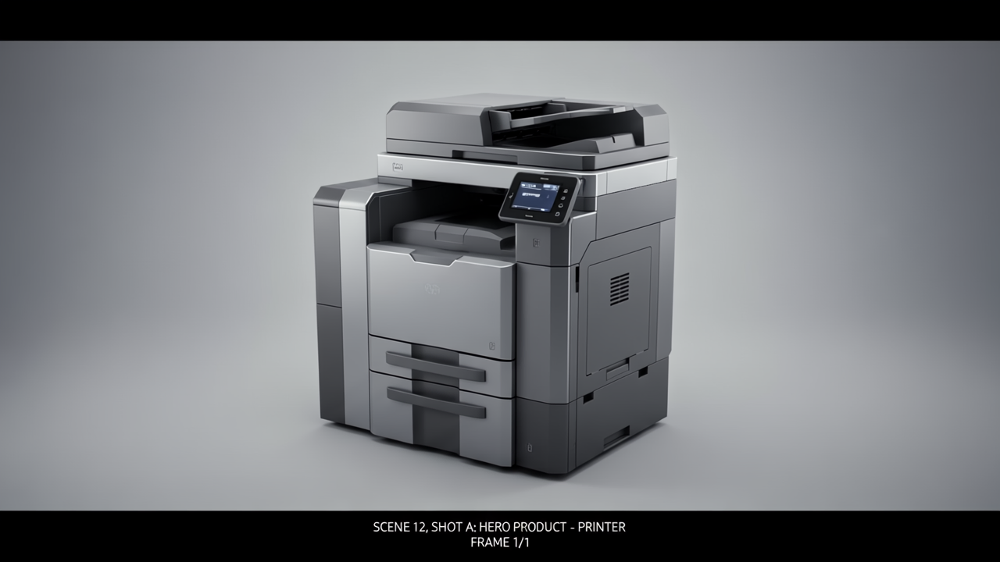
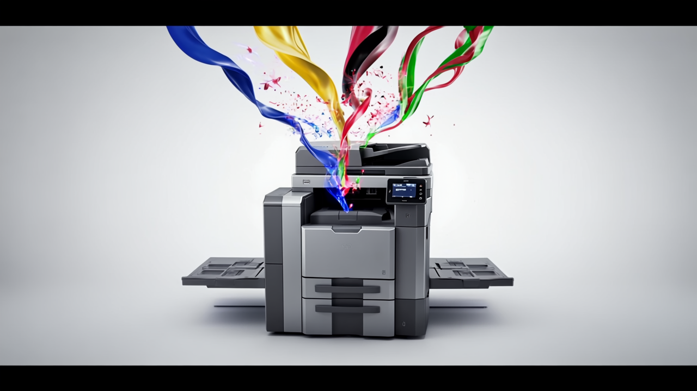
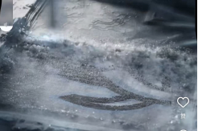

Week1
Team Member
Yiqi Zheng (Fx)
Riley Ho (Fx)
Itim Kongsakulvatanasook (Fx)
Sofia Mancias (Compositing)
Jan 10
Benji Hopkins (Look Dev)
SCAD X HARBOR X ETC - Week 1
Hello, this is my first week of the Scad x Harbor x ETC blog!
We came up with six products we were interested in and decided to focus on the 3D Texture UV Printer, as it represents a new and emerging technology.

PURPOSE:
Explores advanced printing technology as a bridge between imagination and reality, transforming digital creativity into physical form.
ELEMENTS:
UV Printer(eufyMake): This is our hero object
Flowing Color Swirls: Symbolize abstract creativity taking shape, while emphasizing true-to-life color fidelity.
Printed Texture: The physical result of the printing process, showing how digital designs become tangible surfaces.
Materials: Different real-world surfaces that demonstrate the printer’s versatility and practical use.
So we started by defining the shots, and after discussion, we decided on four shots. Each team member then created a rough storyboard based on their own understanding and visual interpretation. These are our results of the discussion.
-
Shot 1: Showcase the product
-
Shot 2: Colors swirl and flow into the printer
-
Shot 3: Demonstrate the printing process across various materials
-
Shot 4: Close-up progression from smaller to larger non-flat objects, highlighting surface texture



Shot 1
Shot 2


AI Generated
Shot 3
Shot 4
Extreme macro shot of a laser scanning across a
textured surface, revealing fine material details
under grazing light. (camera angle like that)
Hard cuts between extreme macro shots of different materials,
with continuous laser motion maintaining visual flow.
This is our shot breakdown.

Those are my references for the fluid simulation.
This is the first version of the layout that Itim did.
-
Continue working on the camera movement.
-
Conduct simple tests for fluid swirl and fluid simulation.